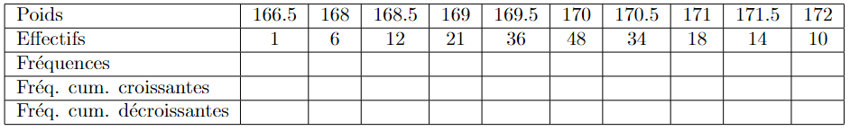
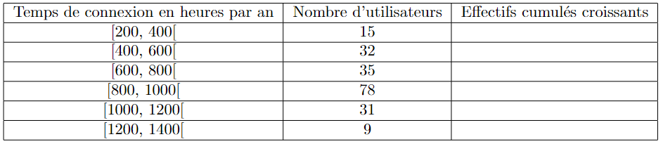
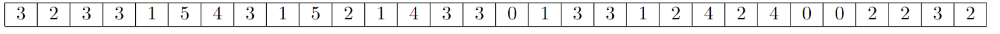
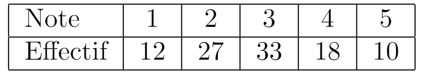
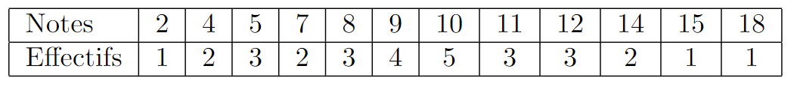

Série N° 1¶
Exercice 1¶
Un prélèvement, par le service des fraudes, de 200 boîtes de fromage contenant en principe 170g de fromage a donné les résultats suivants :

Compléter le tableau.
Représenter graphiquement la série des effectifs par un nuage de points.
Exercice 2¶
Une société de services en informatique fait une analyse des temps d’utilisation devant un ordinateur. Elle réalise une enquête auprès d’un échantillon de 200 clients et obtient les résultats suivants :

Quel est le pourcentage d’utilisateurs qui se connectent au moins 1000 heures?
Quel est le temps moyen d’utilisation d’un ordinateur? 3. Compléter le tableau avec les effectifs cumulés croissants.
Quel est le temps moyen d’utilisation d’un ordinateur?
Compléter le tableau avec les effectifs cumulés croissants.
Représenter graphiquement cette série des effectifs cumulés.
Exercice 4¶
Pour les deux séries suivantes, calculer la moyenne, la médiane, les deux quartiles et l’étendue.
La premiere series (non groupée):

La deuxieme serie (groupée):

Exercice 5¶
Calculer la médiane et l’écart inter-quartile des différentes séries.
2; 3; 7; 8; 11; 17; 21; 22
10; 7; 24; 38; 0; 41; 18; 5; 22
41; 52; 61; 66; 69; 73; 79; 84; 87; 92; 94; 101; 113; 127; 130
Exercice 6¶
Avant de rendre les copies à ses élèves, un professeur a fait quelques calculs statistiques à partir de la série de leurs notes :
moyenne : 11
médiane : 12
\(1^{er}\) quartile : 9
\(3^{\mbox{ème}}\) quartile : 13
note minimale : 4
note maximale : 15
On sait de plus qu’il y a 24 élèves dans la classe. Répondre par vrai ou faux aux affirmations suivantes :
La moitié des élèves ont une note en dessous de 11.
Il y a au moins un élève qui a eu pour note 12.
Il y a au moins un élève qui a eu 13.
La moitié des notes de la classe se situent entre 9 et 13.
La médiane est la \(12^{\mbox{ème}}\) note dans la série des notes rangées dans l’ordre croissant.
Exercice 7¶
Le tableau suivant fourni les notes des élèves d’une classe lors d’un devoir de mathématiques :

Quel est le pourcentage (à 0.1% près) d’élèves de cette classe ayant obtenu une note :
comprise entre 8 et 12 (valeurs incluses) ?
strictement inférieure à 9?
Déterminer l’étendue, la médiane, les quartiles de cette série.
Déterminer la moyenne de la classe sur ce devoir.
Dans une autre classe, il y a 20 filles et 15 garçons. A un contrôle, la moyenne des filles était de 11,8 et celle des garçons de10,2. Quelle était la moyenne de la classe ?
Ce contrôle était commun avec la première classe de 30 élèves, la moyenne des deux classes était de 10,7. Quelle était la moyenne dans la première classe ?